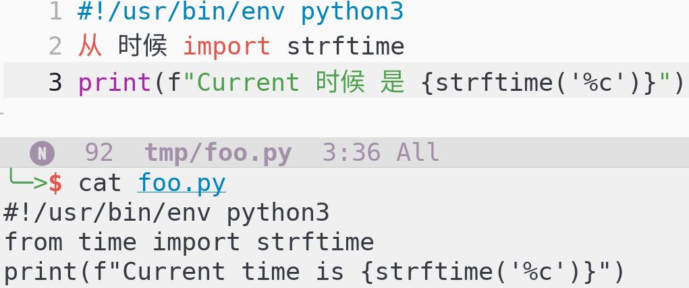
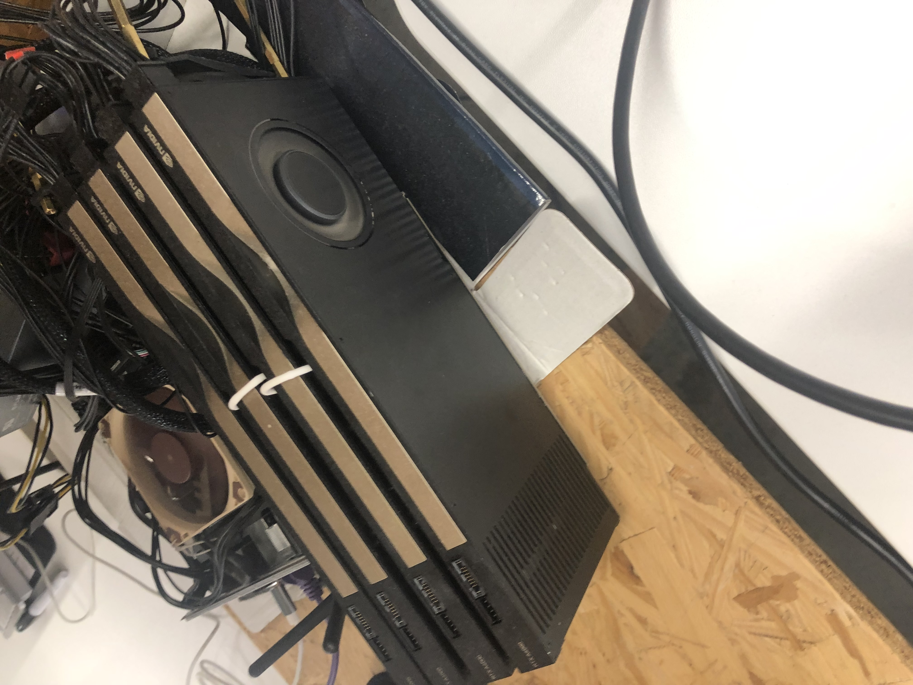
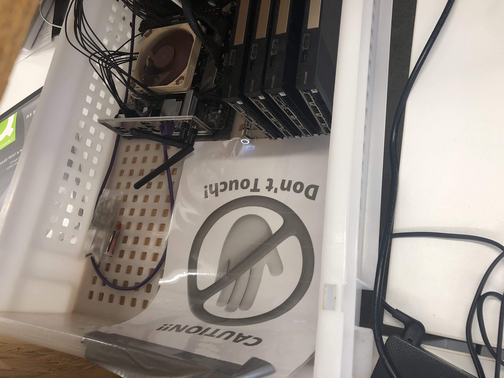

There are useful applications of LLMs. Here is a useless application:
We can use LLMs to compress text better than zip can.
If you see The USA is located in North __, and its 44th __ was Barack __.,
you can fill in the blanks. So can an LLM.
More generally, if you see My favorite color is __, you don't know what's in the blank,
but you know it's probably one of [red, blue, yellow, green, ...] and not wombat.
So it only takes a small hint (i.e. a few bits) to tell you how to fill in the blank.
(More details here)
Say we take 1465 bytes copied from the Wikipedia page for 2026 (i.e. not something in the model's training data).
zip can compress that down to 956 bytesQwen/Qwen3-0.6B to compress, we can instead achieve 892 bytes. Visualization:
0,0,0,0,0,0,0,0,0,0,0,0,, so they can be compressed further.
Hence if we apply zip on top of LLM-based compression, we can reach 574 bytes.(Idea for LLM compression not original to me)
I've used zellij for terminal multiplexing since 2022. In fall 2025 I started using Emacs instead.
When I open a Python file, Emacs displays some words in Mandarin. This makes pair coding a little more difficult:

I used to open PDFs with zathura, but I found it's easier to let Emacs convert the PDF to PNGs and then display them. Why leave the Emacs ecosystem?
I think the people who use Emacs as a web browser are crazy. But a year ago I thought the people who used Emacs as a terminal multiplexer were crazy. Maybe it's contagious.
[Deleted paragraph about how wonderful my keyboard shortcuts are]
Someone at the coworking space stored their speaker system next to my desk:

Sometimes I had to nudge it back to make space for my laptop. The speakers were plugged in and occasionally warm to the touch.
One day I looked more closely, saw the NVIDIA logo, and realized I was touching powered-on A4000 GPUs with my bare hands.
Maintenance added a case and sign to keep idiots like me absent-minded people like me away:
